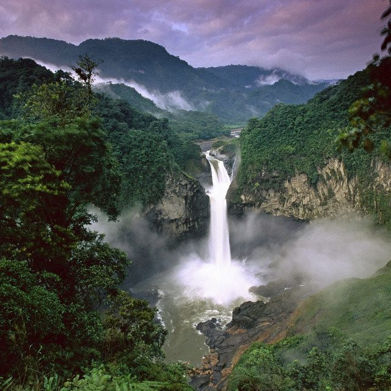

The Eclectic Polymath Podcast · Archive
#070 The Amazon Rainforest: The Living Engine of Earth

About this episode
The Amazon is often imagined as untouched wilderness, but that story misses something essential: the forest is also a living archive of human history, Indigenous knowledge, ecological engineering, and planetary survival.
This episode looks at the Amazon Basin as a biophysical system shaped by deep time, ancient civilizations, colonial violence, and modern extraction. From human-managed landscapes and Indigenous stewardship to mining, logging, agriculture, and industrial development, the Amazon becomes more than a rainforest. It becomes a contested engine of climate, memory, and power.
Key points
- The Amazon is often imagined as untouched wilderness, but that story misses something essential: the forest is also a living archive of human history, Indigenous knowledge, ecological engineering, and planetary survival.
- This episode looks at the Amazon Basin as a biophysical system shaped by deep time, ancient civilizations, colonial violence, and modern extraction.
- From human-managed landscapes and Indigenous stewardship to mining, logging, agriculture, and industrial development, the Amazon becomes more than a rainforest.